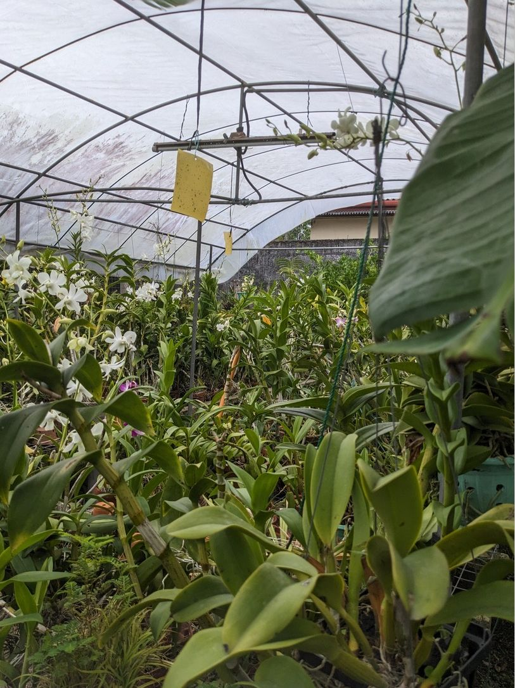

Hybrid Pollination & Compatibility Analysis
Checks whether a plant is ready to be used as a parent and looks up a proposed cross in the register of known hybrids.
Wickramasinghe D.PIT22065230
Using Multi-Modal Machine Learning
A smart platform that helps Sri Lankan Vanda orchid growers detect diseases, follow plant growth and flowering, automate watering and fertilization, and plan new hybrid crosses from a single mobile app.
Orchids are an important part of the floriculture industry in Sri Lanka, and Vanda orchids are among the most widely grown. Most of the daily work in a shade house, such as checking plants for disease, deciding when to water, feeding and choosing plants for breeding, is still done by hand and depends on the grower's experience.
Our project combines IoT sensors, computer vision and machine learning in one system. Each of the four research components handles a different part of orchid care, and all of them work through the same mobile app and cloud database.

The system is made up of four components. Each one was researched and developed by one member of the team.
Checks whether a plant is ready to be used as a parent and looks up a proposed cross in the register of known hybrids.
Identifies orchid leaf diseases from a photo, grades how severe the infection is and recommends a suitable treatment.
Uses IoT sensors and machine learning to decide when and how long each section of a shade house is watered, and feeds the plants automatically.
Recognises the growth stage of a Vanda orchid from images and predicts when the plant will bloom, up to 21 days ahead.
Data is collected on the farm, analysed in the cloud and turned into results and actions the grower can use.
Photos are taken with the phone camera and sensor nodes record temperature, humidity and light in each section of the shade house.
Machine learning models analyse the images and sensor data, and the results are stored in a shared cloud database.
The grower sees results and alerts in the mobile app, while the watering system runs the pumps on its own schedule.
The main tools and frameworks behind the mobile app, the backend, the machine learning models and the IoT devices.
Hybrid Pollination & Compatibility Analysis
Disease Detection & Treatment Recommendation
Smart Watering & Automated Fertilization
Growth Stage Recognition & Bloom Prediction
Read the project documents, go through the milestones or get in touch with the team.